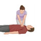

CPR
۱-بلافاصله Chest compression رو با ۱۰۰-۱۲۰ تا در دقیقه شروع کنین.
۲-تیم CPR صدا بزنین. دستگاه دفیبریلاتور اماده بشه
ریتم بیمار رو مشخص کنین. اگر VF. VT بود شوک بدین.
۳-بلافاصلهchest compression شروع کنین و تا ۲ دقیقه بدون وقفه ادامه دهید.
۴-بعد ۲دقیقه نبض و ریتم رو چک کنین اگر همچنان نیاز به شوک بود شوک بدهید. بعد از شوک بلافاصله تا ۲ دقیقهchest compression رو شروع کنین.
و این سیکل رو ادامه بدین.
Chest compression >>shock>>Chest compression
تا زمانی که ریتم بیمار برگرده.
حالا چه داروهایی لازمه یاد داشته باشیم؟
اپی نفرین و آمیودارون
Amp Epinephrine 1mg/ml iv q3-5min
Amp Amiodarone 150mg/3ml iv first 300mg then 150 mg
تشخیص افتراقی با رمز اختصاری H ها و T ها:
Hypovolemia 1️⃣
Hypoxia 2️⃣
Acidosis (H+) 3️⃣
Hypothermia 4️⃣
5️⃣ Electrolyte abnormality (Hyper/hypo K+)
Cardiac Tamponade 6️⃣
Tension pneumothorax 7️⃣
Toxic Overdose 8️⃣
Thrombus/PE 9️⃣
🔟 Thrombus/AMI